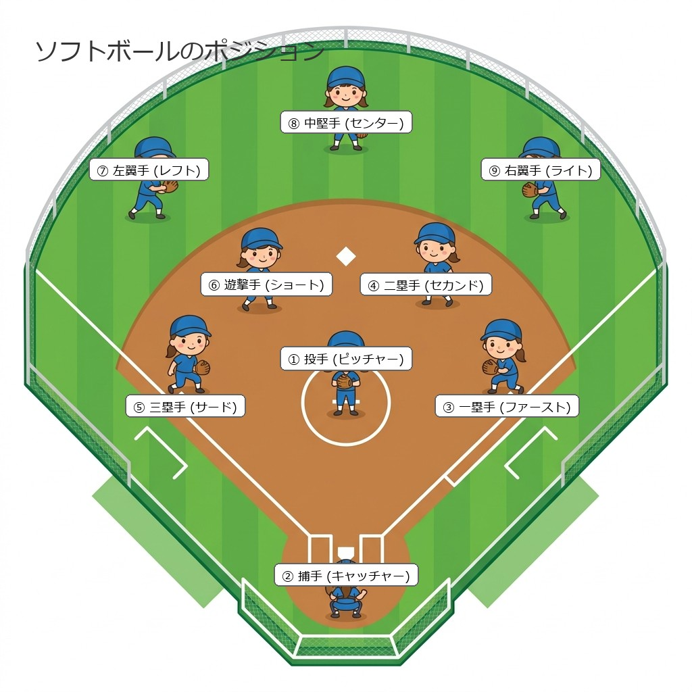
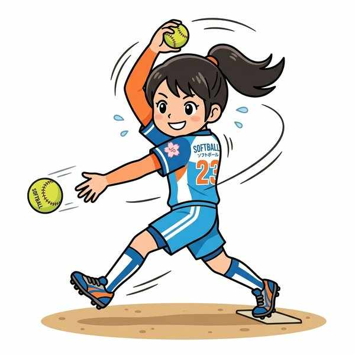
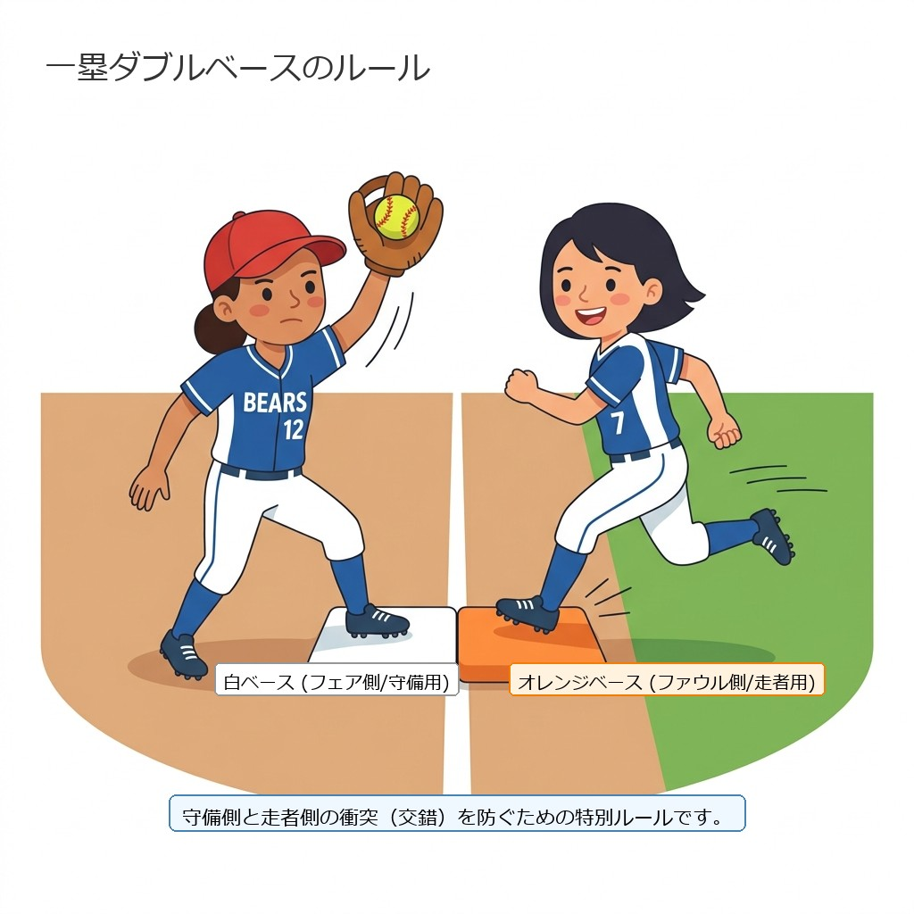
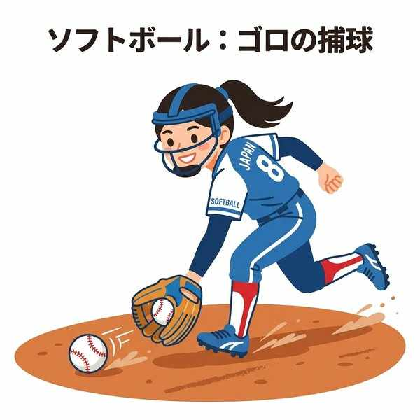

中学保健体育（体育実技）
単元15: ソフトボール
ソフトボールは、野球に非常によく似たベースボール型のスポーツですが、ボールの大きさやピッチャーの投球方法、ベース間の距離など複数の違いがあります。ここでは、9人のポジション、ソフトボール特有のルール（ウインドミル投法や離塁禁止）、そしてテストによく出る戦術用語を整理します。
1. ポジションと試合開始

ソフトボールの守備位置とベース配置
- 人数：1チーム9人で守備・攻撃を行います。
- 攻守交代：攻撃側の3人がアウトになると攻守交代します。
- 開始の合図：主審（球審）が「プレイボール」と告げて試合を開始します。
- 守備位置（ポジション）：
- 内野手（6人）：投手（ピッチャー）、捕手（キャッチャー）、1塁手（ファースト）、2塁手（セカンド）、3塁手（サード）、および遊撃手（ショート）。
- 外野手（3人）：左翼手（レフト）、中堅手（センター）、右翼手（ライト）。
2. ストライクゾーンと投球

ソフトボール特有のウインドミル投法
- ストライクゾーンの範囲：
- 上限：打者のわきの下（みぞおち）。
- 下限：打者の膝の皿の底部（膝の下）。この範囲を通過したボールがストライクとなります。
- 投球方法：
- ウインドミル投法：ピッチャーが腕を風車（ウインドミル）のようにぐるりと1回転させて下から投げる、最も代表的な投球方法。
- 投球距離：ピッチャーからキャッチャーまでの距離は、野球と比べて短いです。
- チェンジアップ：腕の振りは同じままで、意図的に球速を遅くして打者のタイミングを外す変化球。
- スローピッチソフトボール：ピッチャーが緩い山なりのボールを投げなければならない、初心者向けなどの独自ルールで行う種目。
3. ソフトボール特有のルール

交錯を防ぐ一塁ダブルベースのルール
野球とのルールの最大の違いとして、テストで頻繁に出題される項目です。
- 離塁アウト（リードアウト）：ソフトボールでは、ピッチャーの手からボールが離れる前に、ランナーが塁から足を進める（離れる）ことが禁止されています。離れてしまった場合は反則によるアウトとなります（リードの禁止）。
- タイブレーク（タイブレーカー）：試合が同点のまま延長戦に入った際、早期に決着をつけるため、あらかじめランナー（通常は前イニングの最終打者）を2塁に置いた状態でイニングを開始する制度。
- インフィールドフライ：ノーアウトまたはワンアウトでランナーが1・2塁（または満塁）のとき、打者が内野フライを打ち上げた場合、野手がわざと落球してダブルプレー（2アウト）を狙うのを防ぐために、審判の宣告によって打者がその場でアウトになるルール。
4. その他用語

体を正面において確実に両手で捕球する
- ゴロ：打者が打った、地面を転がる打球のこと（空中に上がる打球はフライ）。
- ダブルプレー（併殺）：守備側が一連のプレーで連続して2つのアウトを取ること。
🔥 定期テスト対策・暗記のコツ
① 投手の投げ方「ウインドミル」
腕を1回転させて下から投げる投法は「ウインドミル投法」です。この言葉は記述やカタカナ指定の穴埋めで100%狙われます。
② ソフトボールは「リード禁止（離塁アウト）」
野球のようにピッチャーの投球前にランナーが塁から離れる（リードする）ことはできません。ピッチャーの手からボールが離れる前に離れると「離塁アウト（リードアウト）」になる点は、野球との違いとして超頻出です。
③ タイブレークとインフィールドフライ
「あらかじめ走者を置いてイニングを始める ➔ タイブレーク」、「野手のわざと落球を防ぐための打者アウト ➔ インフィールドフライ」。どちらもルールの深い理解を問う記述問題で出題されやすい専門用語です。